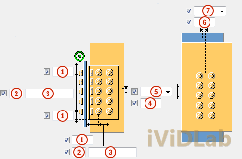
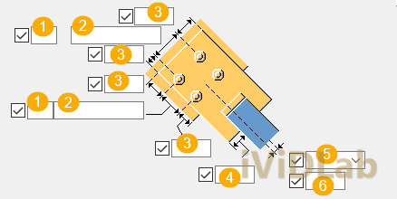
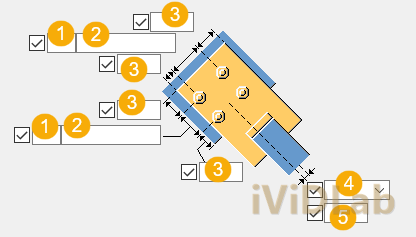

Giải pháp giằng góc khung: Làm chủ Corner bolted gusset (57) & Wraparound gusset (58)Corner Bracing Solutions: Mastering Corner Bolted Gusset (57) & Wraparound Gusset (58)
Chuyên mục: Tekla StructuresCategory: Tekla Structures•Ngày đăng: 24/05/2026Published: May 24, 2026•Tác giả: iViDLab TeamAuthor: iViDLab Team
Hệ giằng góc khung đóng vai trò cốt lõi trong việc duy trì ổn định không gian và truyền tải trọng ngang (gió, động đất) xuống móng. Việc lựa chọn cấu kiện giằng góc không chỉ liên quan đến khả năng chịu lực mà còn phải đảm bảo không cản trở các hệ thống bao che xung quanh.
Bài viết này được iViDLab Team biên soạn từ TS_COMP_2025_en_System components.pdf, tập trung phân tích Corner bolted gusset (57) và Wraparound gusset (58).
1. Corner Bolted Gusset (57)
Liên kết 57 là giải pháp giằng góc truyền thống. Bản mã gusset được hàn trực tiếp vào cánh cột hoặc bụng dầm, và liên kết bulong với thanh giằng. Điều này đòi hỏi người kỹ sư phải điều chỉnh góc vát bản mã sao cho không bị cấn với các thanh giằng góc khác, đồng thời phải đảm bảo đủ khoảng cách để siết bulong.
Mẹo chuyên gia: Để tránh va chạm tại các góc có từ 3 thanh giằng trở lên tụ về, hãy tận dụng chức năng offset và chamfer tự động của component 57 thay vì phải di chuyển thủ công.
2. Wraparound Gusset (58)
Khác biệt lớn nhất của 58 là bản mã "ôm" (wraparound) quanh cánh cột, cho phép tạo liên kết giằng ở mặt phẳng ngoài của cột mà không cần khoét lỗ hay thêm chi tiết trung gian phức tạp. Đặc biệt hữu ích khi thiết kế các khung tháp trụ truyền tải điện (lattice tower) hoặc giàn mái (roof bracing) có ống lồng.

Chi tiết góc Gusset (57)

Khoảng hở Wraparound (58)

Giao cắt đa hướng
Corner bracing systems play a vital role in maintaining spatial stability and transferring lateral loads (wind, seismic) to the foundation. Selecting the right corner bracing component involves not only structural capacity but also ensuring it doesn't clash with surrounding cladding systems.
This article by the iViDLab Team, compiled from TS_COMP_2025_en_System components.pdf, focuses on analyzing Corner bolted gusset (57) and Wraparound gusset (58).
1. Corner Bolted Gusset (57)
Component 57 is the traditional corner bracing solution. The gusset plate is welded directly to the column flange or beam web, and bolted to the bracing member. This requires the detailer to adjust the gusset chamfer angle to avoid clashing with other bracing members, while ensuring sufficient clearance for bolt tightening.
Pro Tip: To avoid collisions at corners where 3 or more bracing members converge, utilize the automatic offset and chamfer functions of component 57 instead of moving elements manually.
2. Wraparound Gusset (58)
The major distinction of 58 is that the gusset "wraps around" the column flange, allowing bracing connections on the outer plane of the column without needing to cut holes or add complex intermediate details. It's particularly useful when designing lattice transmission towers or roof bracing with sleeve tubes.